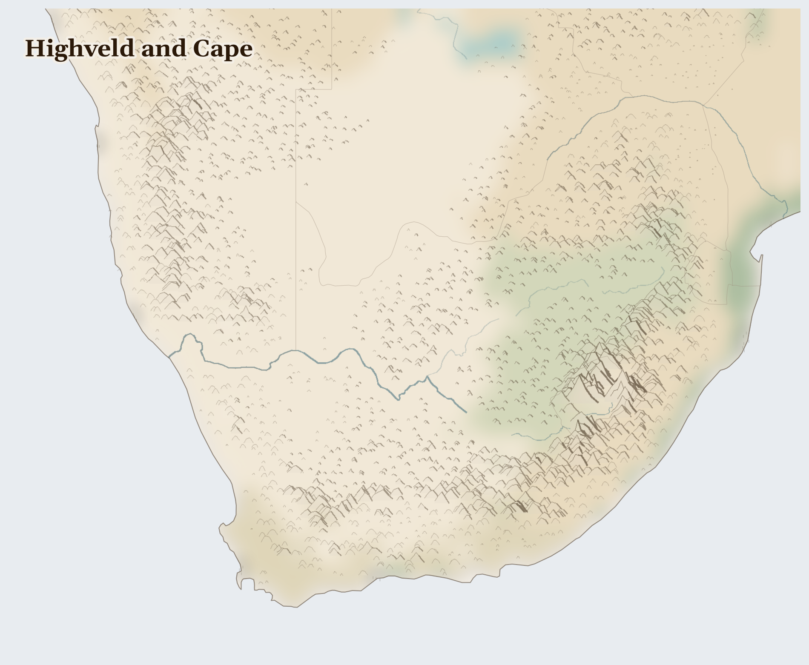

Highveld and Cape
Lesotho, Eswatini, Botswana and 2 more countries
Afrotropic
The southern tip of Africa: high grassy plains where lightning storms roll in the summer, and, right at the bottom, a green cape between two oceans where a flat-topped mountain watches over the sea. Penguins waddle on some of the beaches here.
How Life Works Here
Under these plains lies some of the richest rock on Earth — gold, platinum, and coal. Miners go down shafts deeper than almost anywhere in the world to bring it up; the platinum ends up cleaning the exhaust of cars everywhere, and the coal makes the country's electricity.
Mineworkers (Basotho from Lesotho, Mozambicans, Eastern Cape migrants).
Johannesburg South communities (residential contamination from tailings seepage), Vaal River downstream communities and irrigators (12M+ affected), Zama zama informal miners (entering abandoned shafts).
Mpumalanga Highveld communities (world's worst NO2 pollution, children's asthma), Coal miners (86,000 direct jobs).
What Is Happening
Mining is hard and dangerous, and it has not always been fair. Years ago, at a place called Marikana, miners who asked for better pay were killed, and the whole country wept and asked how to do better. Mining has also left some water dirty for the families living nearby. But South Africans are strong at standing together: workers formed unions to demand safety and fair pay, and communities are cleaning their rivers and holding the mines to account.
Something Wonderful
The little green cape at the tip has more kinds of wild flowers packed into it than almost anywhere on Earth — more than the whole of Britain, in a patch you could drive across in a day. And table-topped mountains catch a cloth of cloud that pours over the edge like a slow white waterfall.
Let's Do Something Together
Where Does Our Food Come From?
Look at something you ate today. Where did it grow? If you have a map, try to find the country. Food travels a very long way to reach our plates! In some places, families grow their own food, but when the rains do not come, the crops cannot grow.
- food packaging with country of origin
- world map or globe
For grown-ups
Global supply chains connect consumer choices to land use in crisis regions. Cash crop exports (coffee, cocoa, palm oil) often displace subsistence farming, making communities dependent on volatile markets.
Let Us Pray Together
God, bless the farmers who grow our food. Help families whose crops did not grow.
Leader: We pray for those who are hungry. For the hundreds of thousands across Highveld and Cape who cannot meet their daily food needs.
All: Lord, hear our prayer.
Leader: We pray for Eswatini. For Eswatini, where multiple pressures are interacting and the situation is escalating.
All: Lord, hear our prayer.
Leader: We pray for the helpers. For humanitarian workers and missionaries in Highveld and Cape.
All: Lord, hear our prayer.
Leader: We pray for seeds of hope. For every act of resistance and care in Highveld and Cape.
All: Lord, hear our prayer.
O give thanks to the Lord, for he is gracious, for his steadfast love endures for ever. Let the redeemed of the Lord say this, those he redeemed from the hand of the enemy,
Collect
Lord of all power and might, the author and giver of all good things: graft in our hearts the love of your name, increase in us true religion, nourish us with all goodness, and of your great mercy keep us in the same; through Jesus Christ your Son our Lord, who is alive and reigns with you, in the unity of the Holy Spirit, one God, now and for ever.
Amen.
Talk About It
The miners at Marikana stood together to ask for fair treatment. When is a time you and others stood together for something that mattered?
One Thing We Can Do
Cars all over the world run cleaner because of platinum dug up here by miners far underground. Next time you're in a car, remember them — and pray for miners' safety and fair pay.